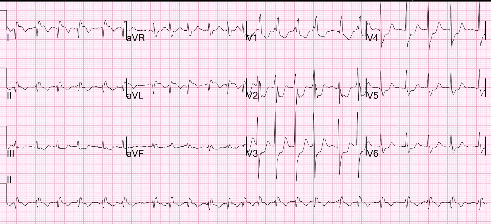
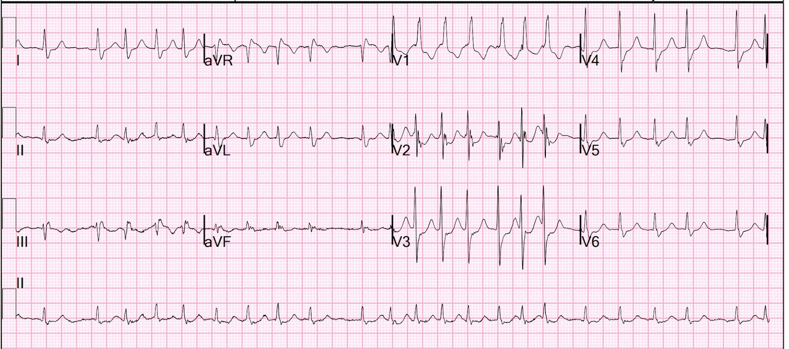
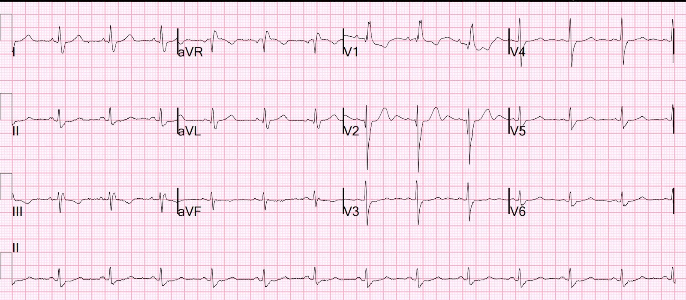
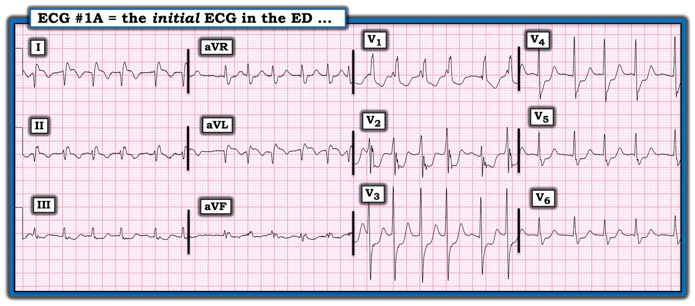
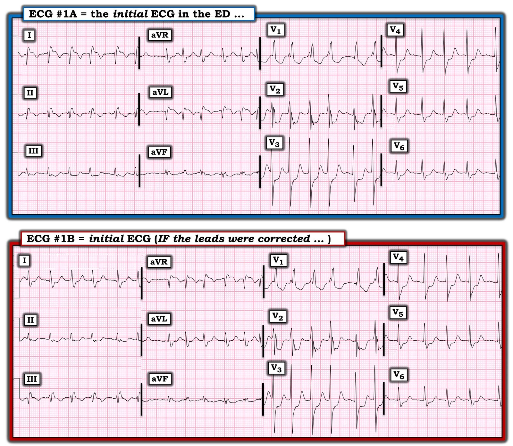
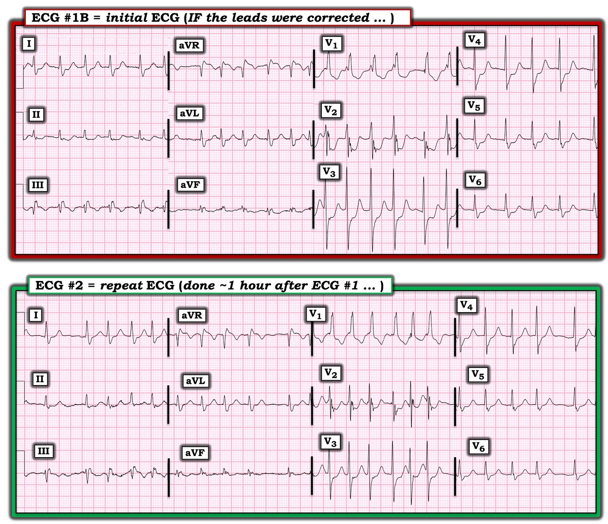

17/08/2022 — ST chênh xuống tối đa ở V3 này có phải là OMI thành sau?
Bản dịch tiếng Việt của bài "Does this ST Depression Maximal in V3 Represent Posterior OMI?" – Dr. Smith’s ECG Blog. Giữ nguyên toàn bộ 8 hình ảnh của bản gốc.
Tôi thấy điện tâm đồ này khi đọc lướt trên hệ thống:


Bạn nghĩ gì?
Đây là những gì tôi đã ghi:
RUNG NHĨ ĐÁP ỨNG THẤT NHANH
TRỤC LỆCH PHẢI [TRỤC QRS > 100]
BLỐC NHÁNH PHẢI
ST CHÊNH XUỐNG RÕ, NGHĨ TỚI TỔN THƯƠNG DƯỚI NỘI TÂM MẠC
“Thiếu máu cục bộ nặng (ST chênh lên ở I và aVL kèm ST chênh xuống soi gương ở các chuyển đạo dưới; ST chênh xuống ở chuyển đạo trước tim, tối đa ở V3): thiếu máu cục bộ dưới nội tâm mạc hay tắc mạch vành cấp. Rung nhĩ có thể gây hình ảnh giả tắc mạch (Occlusion mimic).”
***NHỒI MÁU CƠ TIM CẤP***
(Tôi để chẩn đoán Nhồi máu cơ tim cấp trong kết quả đọc vì tôi biết troponin sẽ tăng do thiếu máu cục bộ, mà đó chính là định nghĩa của nhồi máu cơ tim cấp — nhưng trong ca này, nhiều khả năng nhất đó sẽ là nhồi máu cơ tim típ 2 do nhịp nhanh)
Ngoài ra còn có đảo điện cực LA-RA.
ST chênh xuống tối đa ở V1-V4
Chúng tôi đã chứng minh trên Journal of the American Medical Association rằng ST chênh xuống tối đa ở V1-V4 (so với V5, 6) có độ đặc hiệu 97% đối với OMI trong một quần thể bệnh nhân có nguy cơ cao bị hội chứng vành cấp (ACS). Tuy nhiên, điều này KHÔNG áp dụng cho bệnh nhân bị rung nhĩ, và thậm chí có thể không áp dụng cho bệnh nhân có nhịp nhanh.
RBBB và ST chênh xuống
Điện tâm đồ có RBBB thường có ST chênh xuống không do thiếu máu cục bộ ở V1-V3, ngược hướng với sóng R’ dương; mức ST chênh xuống này rất vừa phải, và khi “quá mức”, nó phản ánh thiếu máu cục bộ, như ở ca này. Trong ca này, thiếu máu cục bộ KHÔNG phải là OMI; nó chỉ giống OMI vì có rung nhĩ.
Tôi đã xem hồ sơ bệnh án:
Bệnh nhân rất cao tuổi và đã bị ngã, không thể tự đứng dậy nên đã nằm dưới sàn trong một thời gian dài. Bà có một số chỗ gãy xương.
OMI cấp hoàn toàn có thể là nguyên nhân khởi phát cú ngã như vậy, nên nó phải nằm trong chẩn đoán phân biệt.
Điều cực kỳ quan trọng là phải hiểu rằng rung nhĩ có thể gây ST chênh xuống giống OMI thành sau.
Bản ghi này được ghi một giờ sau đó:


Không còn đảo điện cực
Thiếu máu cục bộ không còn nặng như trước (ST chênh xuống ít hơn)
Troponin I độ nhạy cao đạt đỉnh 82 ng/L (phù hợp với nhồi máu cơ tim típ 2)
Siêu âm tim chính thức cho thấy chức năng thất trái tăng động với EF 78%, không có rối loạn vận động thành.
Điện tâm đồ ngày hôm sau:


Nhịp xoang và thiếu máu cục bộ đã hết
Điểm cần học:
Trong bối cảnh rung nhĩ đáp ứng thất nhanh (RVR), ST chênh xuống tối đa ở V1-V4 có thể là do thiếu máu cục bộ do tăng nhu cầu chứ không phải OMI. Điều này trái ngược với nhịp xoang có tần số tim dưới 100.

===================================
BÌNH LUẬN CỦA TÔI, bởi KEN GRAUER, MD (17/8/2022):
===================================
Tôi được xem điện tâm đồ hôm nay mà không có chút bệnh sử nào. Vì có rất nhiều dấu hiệu thú vị — tôi tập trung bình luận vào bản ghi này, được tôi trình bày lại ở Hình 1.
- Nhịp là AFib nhanh.
- Phức bộ QRS rộng và dương hoàn toàn ở chuyển đạo V1, kèm sóng S tận rộng ở chuyển đạo V6 — vậy là có RBBB hoàn toàn.
- Có rất nhiều ST chênh xuống, vượt quá mức dự kiến với RBBB đơn thuần. ST chênh xuống này tối đa ở các chuyển đạo V1-đến-V4 — gợi ý OMI thành sau cấp.
- Dường như cũng có ST chênh lên ở các chuyển đạo bên cao I và aVL. Điều này có vẻ gợi ý OMI sau-bên (có lẽ do tắc LCx cấp).
Những điểm CHÍNH (theo Dr. Smith): Hóa ra không hề có OMI thành sau cũng như OMI thành bên! Đây là những Bài học “cần nhớ” từ bản ghi hôm nay:
- Theo Dr. Smith — AFib nhanh đôi khi có thể giống OMI thành sau cấp. Trong khi ST chênh xuống lan tỏa thường gặp với các nhịp SVT đều — thì ST chênh xuống trong AFib nhanh có xu hướng tối đa ở các chuyển đạo trước (như ở Hình 1), theo cách gợi ý sai là OMI thành sau. ST chênh xuống ở thành trước này thường hết (hoặc ít nhất giảm đi nhiều) khi AFib được kiểm soát và tần số tim chậm lại.
- Phức bộ QRS ở chuyển đạo I trông “lạ”. Chuyển đạo này hầu như không bao giờ bình thường lại có sóng Q sâu như thấy ở Hình 1. Bất cứ khi nào bạn thấy một sóng lệch âm ban đầu quá lớn ở chuyển đạo I — Hãy nghĩ tới đảo điện cực LA-RA!


CÂU HỎI:
- LÀM THẾ NÀO tôi biết có đảo điện cực LA-RA?
TRẢ LỜI:
Thú nhận của tôi: Ban đầu — tôi hoàn toàn không chắc chắn về đảo điện cực, vì ST chênh lên ở các chuyển đạo bên cao I và aVL dường như “khớp” với bệnh cảnh tắc LCx cấp gây OMI sau-bên — NHƯNG —
- AFib nhanh dễ gây ST chênh xuống thoáng qua, tối đa ở các chuyển đạo trước, không phải do OMI thành sau.
- VÀ — khi có đảo điện cực LA-RA, hình dạng của chuyển đạo I và aVR bị đảo ngược cho nhau. Nghĩa là, sóng lệch âm ban đầu lớn ở chuyển đạo I (tức là sóng Q sâu) nằm bên trái trông hoàn toàn phù hợp với hình dạng QRS bình thường ở chuyển đạo aVR — và — sóng R dương kèm sóng S tận rộng ở chuyển đạo aVR nằm bên phải trông hoàn toàn phù hợp với hình dạng QRS lẽ ra phải có ở chuyển đạo I khi có RBBB.
Điều gì xảy ra khi đảo điện cực LA-RA?
Tài liệu tra cứu trực tuyến “Quick GO-TO” (tra nhanh) mà tôi yêu thích nhất về các kiểu đặt sai điện cực thường gặp nhất là của LITFL ( = Life-In-The-Fast-Lane). Tôi đã dùng trang web tuyệt vời về chủ đề này mà họ đăng trên website của họ trong nhiều năm. Rất DỄ tìm — Chỉ cần gõ “LITFL Lead Reversal” vào thanh Tìm kiếm — và đường link hiện ra ngay lập tức.
- Trang web này của LITFL mô tả 7 kiểu đảo điện cực thường gặp nhất. Còn có những khả năng khác (tức là có thể đặt sai nhiều điện cực cùng lúc) — nhưng những trường hợp này ít gặp hơn và khó dự đoán hơn.
- Cho đến nay (!) — kiểu đảo điện cực thường gặp nhất là nhầm lẫn giữa điện cực LA (Left Arm – tay trái) và điện cực RA (Right Arm – tay phải) . Đây là sự nhầm lẫn đã xảy ra trong ca hôm nay. Cho rõ ràng — tôi đã trình bày lại hình minh họa từ LITFL về đảo điện cực LA-RA ở Hình 2.

Điện tâm đồ ban đầu lẽ ra phải trông như thế nào?
Cho rõ ràng — tôi đã lấy điện tâm đồ ban đầu trong ca hôm nay ( = điện tâm đồ #1A) — rồi đảo ngược chuyển đạo I — hoán đổi chuyển đạo II và III — và hoán đổi chuyển đạo aVL và aVR ( = điện tâm đồ #1B, là bản ghi phía dưới trong Hình 3).
- Chẳng phải điện tâm đồ #1B giờ đây trông hoàn toàn phù hợp với những gì ta có thể dự đoán cho điện tâm đồ ban đầu có AFib nhanh và RBBB này hay sao? Lưu ý rằng giờ đây có: i) Sóng R dương và sóng S tận rộng ở chuyển đạo I và aVL; ii) Sóng lệch âm ban đầu sâu ở chuyển đạo aVR; và, iii) Phức bộ rSR’ ở chuyển đạo III (thay vì chuyển đạo II) — như thường thấy khi có RBBB.
- Điểm MẤU CHỐT: Lưu ý rằng không còn bất kỳ gợi ý nào về OMI thành bên cao — vì khi các điện cực được đặt đúng (như ở điện tâm đồ #1B) — sẽ không có ST chênh lên ở chuyển đạo I và aVL!


Đã Không có OMI thành sau
Cuối cùng — tôi đã đặt bản ghi ban đầu “đã chỉnh” ( = điện tâm đồ #1B) cạnh điện tâm đồ ghi lại 1 giờ sau đó (Hình 4).
- Hãy lưu ý phép so sánh này xác nhận rằng đã có đảo điện cực LA-RA ở điện tâm đồ ban đầu trong Hình 1 như thế nào — vì hình dạng QRS ở điện tâm đồ #1B và điện tâm đồ #2 hầu như giống hệt nhau!
- Theo Dr. Smith — điện tâm đồ ghi lại cho thấy ST chênh xuống ít hơn đáng kể. Troponin độ nhạy cao (HS troponin) tăng nhẹ, không có rối loạn vận động thành và phân suất tống máu rất tốt trên siêu âm tim là phù hợp với nhồi máu cơ tim típ 2 — xác nhận rằng điện tâm đồ ban đầu quả thật đã cho ấn tượng sai về tắc mạch vành cấp.


PHẦN BỔ SUNG về đảo điện cực:
Điều đã giúp tôi suốt nhiều năm qua nhận ra nhanh chóng phần lớn các trường hợp đặt sai điện cực là chú ý tới các thông số sau đây:
- Chuyển đạo I — thường có phức bộ QRS dương là chủ yếu, vì chuyển đạo phía bên trái này bình thường nhìn thấy hoạt động điện của tim đi về phía chuyển đạo I. Tất nhiên vẫn có thể có trục lệch phải — nhưng hầu như bạn sẽ không bao giờ thấy một phức bộ hoàn toàn âm (tức là phức bộ QS) ở chuyển đạo I trừ khi có: i) đảo điện cực; hoặc ii) tim sang phải.
- Cũng cực kỳ hiếm khi có một sóng Q rất sâu và rộng ở chuyển đạo I khi chuyển đạo này có phức bộ QR. Tất nhiên có những ngoại lệ (chẳng hạn nhồi máu cơ tim thành bên diện rộng) — nhưng tôi luôn cân nhắc khả năng đặt sai vị trí điện cực bất cứ khi nào có một sóng lệch ban đầu âm chiếm ưu thế (tức là sóng Q lớn và rộng khi có phức bộ QR) ở chuyển đạo I.
- NẾU có “âm toàn bộ (global negativity)” (tức là sóng P, phức bộ QRS và sóng T đều âm) ở chuyển đạo I — thì chẩn đoán hoặc là đảo điện cực hoặc là tim sang phải gần như chắc chắn! (tức là NẾU chuyển đạo I trông giống như hình dạng bạn chờ đợi ở aVR — và aVR trông giống như hình dạng bạn chờ đợi ở chuyển đạo I — thì hãy nghi ngờ đảo điện cực LA-RA!)
- Chuyển đạo aVR — thường có phức bộ QRS âm là chủ yếu, vì chuyển đạo phía bên phải này bình thường nhìn thấy hoạt động điện của tim đi ra xa khỏi điểm nhìn từ xa (nhìn xuống từ vai phải) của chuyển đạo aVR. Rõ ràng có những trường hợp QRS có hoạt động dương ở chuyển đạo aVR — nhưng việc thấy QRS hoàn toàn âm ở chuyển đạo I cùng với QRS hoàn toàn dương ở chuyển đạo aVR gần như là chẩn đoán hoặc là đảo điện cực hoặc là tim sang phải!
- Sóng P phải luôn luôn dương ở chuyển đạo II khi là nhịp xoang. Chỉ có 2 ngoại lệ (tức là khi có thể là nhịp xoang mà không có sóng P dương ở chuyển đạo II) — là khi có hoặc là đảo điện cực hoặc là tim sang phải.
- Cuối cùng — cách phân biệt giữa đảo điện cực với tim sang phải trên điện tâm đồ là xem tăng tiến sóng R. Khi có tim sang phải — sẽ có tăng tiến sóng R đảo ngược (tức là sóng R vừa phải ở chuyển đạo V1 sẽ nhanh chóng nhỏ dần rồi biến mất khi bạn đi sang các chuyển đạo ngực bên trái). Ghi lại điện tâm đồ với các chuyển đạo bên phải khi bệnh nhân có tim sang phải sẽ bình thường hóa tăng tiến sóng R.
Các ví dụ KHÁC về đảo điện cực trên blog của Dr. Smith:
Các sai sót kỹ thuật với nhiều kiểu đảo điện cực khác nhau vẫn là một “sự cố” thường gặp đến bất ngờ trong thực hành hằng ngày. Vì vậy — chúng tôi sẽ tiếp tục định kỳ đăng các ví dụ lâm sàng về đặt sai vị trí điện cực. Để ôn lại — TRUY CẬP:
- Bài ngày 4 tháng Sáu năm 2018 (đảo điện cực LA-LL).
- Bài ngày 29 tháng Bảy năm 2018 (đảo điện cực LA-RA).
- Bài ngày 4 tháng Mười Một năm 2018 (đặt sai vị trí điện cực V1,V2).
- Bài ngày 11 tháng Hai năm 2020 (đảo điện cực LA-RA).
- Bài ngày 18 tháng Ba năm 2020 (đảo điện cực LA-RA).
- Bài ngày 28 tháng Tám năm 2020 (đảo điện cực LA-LL).
- Bài ngày 19 tháng Mười Một năm 2020 (đảo điện cực LA-LL).
- Bài ngày 27 tháng Mười Một năm 2021 (đảo điện cực LA-RA).
- Bài ngày 17 tháng Tư năm 2022 (đặt sai vị trí điện cực V1,V2).
- Bài ngày 24 tháng Năm năm 2022 (đảo điện cực LA-LL).
- Bài ngày 26 tháng Năm năm 2022 (đảo điện cực LA-LL).